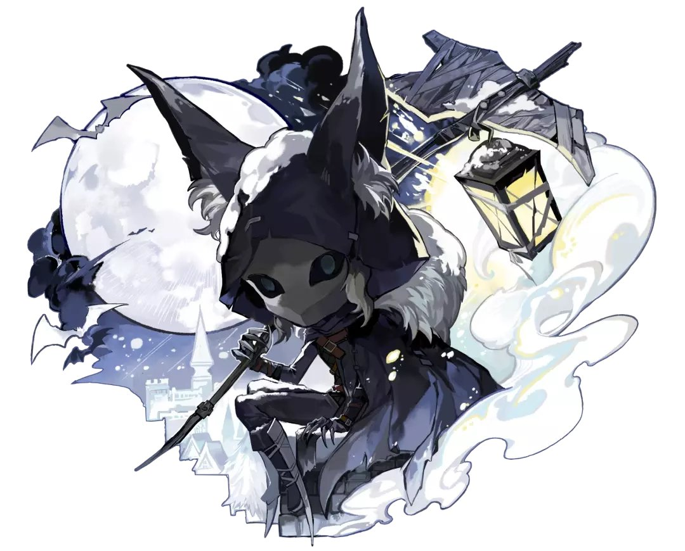

- 우산의 영혼
- 리퍼
- 이타콰
나이트워치 설명

<스토리>
전설에 의하면 매번 겨울이 되면 눈보라로 뒤덮인 숲속 깊은 곳에서 낮고 무거운 천둥소리와도 같은 발걸음 소리가 고요한 겨울밤, 선명히 들려온다고 합니다.
운이 없는 사람은 머리 위에 별을 가리는 거대한 인간의 윤곽을 가진 먹구름을 볼 수 있을 것입니다. 그 인형의 얼굴은 광폭한 분노에 의해 일그러져 있고 그 마치 억지로 잡아당겨져 비틀린 듯한 얼굴은 거대한 뿔에 눈보라를 매달고 메마른 머리카락이 귀신들린 듯 나부끼며 눈으로 보이는 반짝이는 별이 깊고 어두운 붉은빛을 발하고 있습니다.
극소수의 생존자들에 의하면 이타콰에게 발견된 사람은 잔학하게 희롱당하고 사냥당하며 어떤 사냥감들은 마치 이타콰의 복제품 같은 괴물이 되어 극한의 냉기에 화상을 입은 두 발을 질질 끌며 영원한 눈보라로 뒤덮인 숲을 끝없이 헤맨다고 합니다.